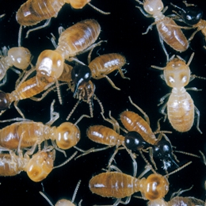

Biodiversity, NCRIS, Data, Australia, Collections, Species, Network
CSIRO (http://www.csiro.au/) is acting as the host organisation for the Atlas of Living Australia and employs a small team of ALA staff based at CSIRO Entomology in Canberra.
CSIRO is contributing data from its collections:
During 2007-2008 the CSIRO collections will be developing a range of content for the Atlas, including:
